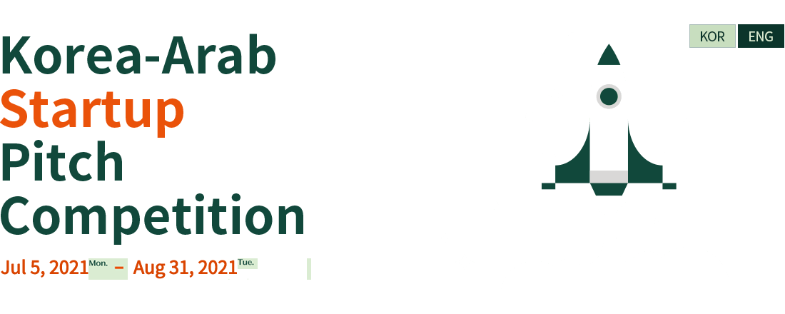
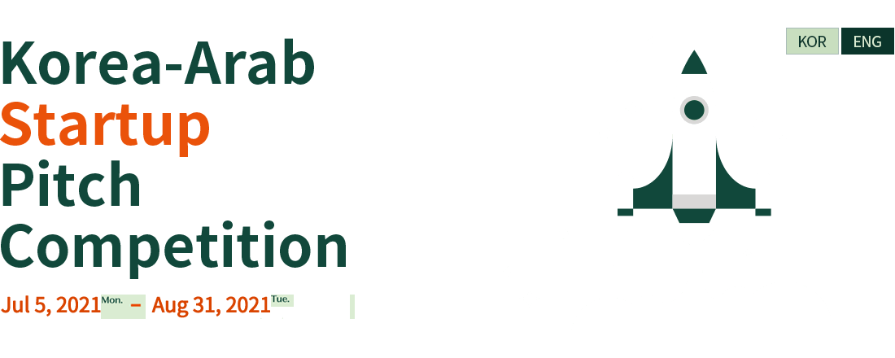

한-아랍 스타트업 아이디어 공모전 (이하 '운영국'이라 합니다.) 는 이용자의 개인정보를 중요시하며, 「정보통신망 이용촉진 및 정보보호 등에 관한 법률」, 「개인정보보호법」을 준수하기 위하여 노력하고 있습니다.
운영국은 개인정보처리방침을 통하여 운영국이 이용자로부터 제공받은 개인정보를 어떠한 용도와 방식으로 이용하고 있으며, 개인정보보호를 위해 어떠한 조치를 취하고 있는지 알려드립니다.
한-아랍 스타트업 아이디어 공모전 지원
2) 수집하는 개인정보의 이용 목적지원 신청 심사, 사업 운영 및 관리
3) 수집 항목① 필수
· 개인 지원자 - 이름, 생년월일, 성별, 국적, 연락처, 주소, 소속, 직위
· 팀 지원자 - 이름, 생년월일, 성별, 국적, 연락처, 주소, 소속, 직위, 팀원 정보(이름,소속,연락처)
② 선택 : 관련 수상 이력
위 개인정보는 수집이용목적이 달성되면 즉시 폐기합니다. 다만, 운영국은 관련법령의 규정에 의하여 개인정보를 보유할 필요가 있는 경우, 해당 법령에서 정한 바에 의하여 아래와 같이 개인정보를 보유할 수 있습니다.
- 계약 또는 청약철회 등에 관련 기록 : 5년
- 대금결제 및 재화 등의 공급에 관한 기록 : 5년
- 소비자의 불만 또는 분쟁처리에 관한 기록 : 3년
- 신용정보의 수집/처리 및 이용 등에 관한 기록 : 3년
- 표시/광고에 관한 기록 : 6개월
- 이용자의 인터넷 등 로그기록/ 이용자의 접속지 추적자료 : 3개월
- 그 외의 통신사실 확인 자료 : 12개월
귀하는 개인정보 수집·이용에 동의하지 않으실 수 있습니다. 다만, 수집 거부 시 지원 신청 및 선정이 제한될 수 있습니다.
- 한-아랍 스타트업 아이디어 공모전 지원
- 지원 신청 심사, 사업 운영 및 관리
보도자료, SNS 운영 및 홍보, 광고 및 홍보 (캠페인) 소재 및 마케팅 등
3) 보유 및 이용기간위 기획안 창작물은 중복지원 방지 및 마케팅 활용 등을 위해 특별한 사유가 없는 한 지속 보유·이용 됩니다.
4) 수집 거부의 권리귀하는 마케팅 기획안 창작물 활용에 동의하지 않으실 수 있습니다. 다만, 수집 거부 시 지원 신청 및 선정이 제한될 수 있습니다.
- 위탁 받는 자 : ‘한-아랍 스타트업 아이디어 공모전’ 홈페이지 위탁용역업체 - (주)대학내일
- 위탁하는 업무내용 : 홈페이지 지원 접수, 홈페이지 이벤트 운영 및 문의 응대, 홈페이지 콘텐츠 제작
개인정보 파기절차 및 방법은 다음과 같습니다.
1) 파기절차이용자의 개인정보는 목적이 달성된 후 별도의 DB로 옮겨져(종이의 경우 별도의 서류함) 내부 방침 및 기타 관련 법령에 의한 정보보호 사유에 따라(보유 및 이용기간 참조) 일정 기간 저장된 후 파기됩니다.
별도 DB로 옮겨진 개인정보는 법률에 의한 경우가 아니고서는 보유되는 이외의 다른 목적으로 이용되지 않습니다.
전자적 파일형태로 저장된 개인정보는 기록을 재생할 수 없는 기술적 방법을 사용하여 삭제합니다.
종이에 출력된 개인정보는 분쇄기로 분쇄하거나 소각을 통하여 파기합니다.
운영국은 이용자의 개인정보를 원칙적으로 외부에 제공하지 않습니다. 다만, 아래의 경우에는 예외로 합니다.
1) 법령의 규정에 의거하거나, 수사 목적으로 법령에 정해진 절차와 방법에 따라 수사기관의 요구가 있는 경우
2) 유료 서비스 제공에 따른 요금 정산을 위하여 필요한 경우
3) 통계작성, 학술연구나 시장조사를 위해 특정 개인을 식별할 수 없는 형태로 가공하여 제공하는 경우
4) 이용자들이 사전에 동의한 경우
이상에 기재된 업체는 추후 변동될 수 있습니다. 업체가 변경되거나, 또는 기재된 내용 외에 이용자의 개인정보를 제공하거나 공유하는 경우에는 이에 대한 별도 이용자 동의를 구하는 절차를 거쳐 제공합니다.
운영국은이용자의 개인정보 관련하여, 언제든지 개인정보 열람/ 정정·삭제/ 처리정지/ 동의 철회를 요청할 수 있습니다.
이를 위하여 대표전화(02-735-1096) 또는 개인정보 보호책임자에게 서면, 전화 또는 이메일로 연락하시면 지체 없이 조치하겠습니다.
1) 운영국은 다음에 해당하는 경우에는 개인정보의 전부 또는 일부에 대하여 열람/ 정정·삭제를 거절할 수 있습니다.
① 법률에 따라 열람이 금지되거나 제한되는 경우
② 다른 사람의 생명·신체를 해할 우려가 있거나 다른 사람의 재산과 그 밖의 이익을 부당하게 침해할 우려가 있는 경우
2) 이용자가 개인정보의 오류에 대한 정정을 요청하신 경우에는 정정을 완료하기 전까지 당해 개인정보를 이용 또는 제3자에게 제공하지 않습니다. 또한 잘못된 개인정보를 제3자에게 이미 제공한 경우에는 정정 처리결과를 제3자에게 지체없이 통지하겠습니다.
3) 운영국은 이용자 혹은 법정대리인의 요청에 의해 삭제/ 처리정지된 개인정보는 “1~5 각 항목”에 명시된 바에 따라 처리하고 그 외의 용도로 열람 또는 이용할 수 없도록 처리하고 있습니다.
4) 이용자의 개인정보를 최신의 상태로 정확하게 입력하여 주시기 바랍니다. 이용자가 입력한 부정확한 정보로 인해 발생하는 사고의 책임은 이용자 자신에게 있으며 타인 정보의 도용 등 허위정보를 입력할 경우 회원자격이 상실될 수 있습니다.
5) 이용자는 개인정보를 보호 받을 권리와 함께 스스로를 보호하고 타인의 정보를 침해하지 않을 의무도 가지고 있습니다. 비밀번호를 포함한 이용자의 개인정보가 유출되지 않도록 조심하시고 게시물을 포함한 타인의 개인정보를 훼손하지 않도록 유의해 주십시오. 만약 이 같은 책임을 다하지 못하고 타인의 정보 및 존엄성을 훼손할 시에는 「정보통신망 이용촉진 및 정보보호 등에 관한 법률」 등에 의해 처벌 받을 수 있습니다.
운영국은 개인정보 처리에 관한 업무를 총괄해서 책임지고, 개인정보 처리와 관련한 이용자의 불만처리 및 피해구제 등을 위하여 아래와 같이 개인정보 보호책임자를 지정하고 있습니다.
① 개인정보 보호 책임자 : 김태은
② 개인정보 보호 담당자 : 김태은
③ 전화번호 : 02-551-7130
④ 이메일 : info@korea-arab.org
기타 개인정보침해에 대한 신고나 상담이 필요하신 경우에는 아래 기관에 문의하시기 바랍니다.
- 개인정보침해신고센터
· 전화 : 국번없이 118
· URL : http://privacy.kisa.or.kr
- 경찰청 사이버안전국
· 전화 : 국번없이 182
· URL : cyberbureau.police.go.kr
The Korea-Arab Startup Idea Pitch Competition (hereinafter referred to as the 'Operation Secretariat') values users' personal information, and will endeavor to comply with the 「Act on Promotion of Information and Communications Network Utilization and Information Protection, Etc.」 and 「Personal Information Protection Act」.
Through the personal information processing policy, the operation secretariat informs you of the purpose and method of using the personal information provided by the user and what measures are being taken to protect personal information.
Through application documents for Korea-Arab Startup Idea Pitch Competition
2) Purpose for use of collected personal informationApplication review, business operation and management
3) Collected items① required
· Individual applicants - name, date of birth, gender, nationality, contact information, address, affiliation, and position
· Team Applicants - Team member information (name, affiliation, contact information)
② optional : related award history
The above personal information will be destroyed immediately after the purpose of collection and use is completed. However, if it is necessary to retain personal information in accordance with the provisions of related laws, the operation secretariat may retain the personal information as follows in accordance with the provisions of the relevant laws and regulations.
- Records related to contract or subscription withdrawal: 5 years
- Records on payment and supply of goods: 5 years
- Records on consumer complaints or dispute resolution: 3 years
- Records on collection/processing and use of credit information: 3 years
- Records on display/advertisement: 6 months
- User's Internet log records / User's access location tracking data: 3 months
- Other communication confirmation data: 12 months
You may not agree to the collection and use of personal information. However, if the collection is rejected, the application and selection of applications may be restricted.
Through application documents for Korea-Arab Startup Idea Pitch Competition
2) Utilization itemsPress release, SNS operation and promotion, advertising and publicity (campaign) material and marketing, etc.
3) Retention and use periodThe above project creations are continuously retained and used to prevent applying multiple times or to use marketing, etc., unless there are exceptional reasons.
4) Right to refuse collectionYou may not agree to use of the creative work. However, if the collection is rejected, the application and selection of applications may be restricted.
- Consignee: Website consigned service Operation Secretariat
- Consigned tasks: website support reception, website event operation and inquiry response, website content creation
After the usage purpose for personal information collected by ‘This Operation Secretariat’ is achieved, the pertaining information shall be immediately destroyed pursuant to the retention and usage periods. The destruction procedures and methods are as follows.
1) Destruction procedureYour personal information will be destroyed upon the achievement of the purpose of providing or collecting such information pursuant to the information protection clause based on internal policies and other relevant laws.
2) Destruction methodPersonal information existing in printed form shall be destroyed by paper shredding, incineration, or dissolution via a chemical process, and personal information saved as electronic files shall be deleted using a technical method disallowing any reproduction of the record.
In principle, the operation secretariat does not provide users' personal information to external parties. However, exceptions are made in the following cases.
1) In accordance with the provisions of laws and regulations or when there is a request from the investigation agency in accordance with the procedures and methods stipulated in the laws for investigation purposes
2) In case it is necessary for the settlement of the fee according to the provision of paid services
3) When providing in a form that cannot identify a specific individual for statistical preparation, academic research, or market research
4) When users agree in advance
The companies listed above are subject to change in the future. If the Operation Secretariat changes or provides or shares users' personal information other than those listed, a procedure to obtain user consent will be provided.
The users or their legal representatives, as main agents of the information, may exercise the following rights regarding the collection, use and sharing of personal information by the Operation Secretariat.
1) exercise right to access to personal information
2) make corrections or deletion
3) make temporary suspension of treatment of personal information
4) request the withdrawal of their consent provided before
If, in order to exercise the above rights, you, as an user, use the menu of 'amendment of member information of webpage or contact the Operation Secretariat by sending a document or e-mails, or using telephone to the Operation Secretariat(or person in charge of management of personal information or a deputy), the Operation Secretariat will take measures without delay: Provided that the Operation Secretariat may reject the request of you only to the extent that there exists either proper cause as prescribed in the laws or equivalent cause.
‘This Operation Secretariat’ does not use cookies that frequently save and find your personal information.An abnormal cookie may be created, however, if you log-in to this website and then open a different family website on a new page. Cookies are very small text files to be sent to the browser of the users by the server used for operation of the websites of the Operation Secretariat and will be stored in hard-disks of the users' computer.
1) Reasons for using cookies and additional information : Prevention of excessive application, normal connection route verification and employment support services.
The users have an option for cookie installation. So, they may either allow all cookies by setting option in web browser, make each cookie checked whenever it is saved, or refuses all cookies to be saved: Provided that, if the user rejects the installation of cookies, it may be difficult for that user to use the parts of services provided by the Operation Secretariat.
The Operation Secretariat makes every effort to provide prompt and good faith responses to inquiries on personal information protection. If you wish to contact the Service’s personal information manager, the Operation Secretariat will provide a prompt response in good faith to inquiries related to personal information when you contact the contact number or email indicated below.
① Personal information protection accountable personnel : Tae-eun Kim
② Personal information protection manager : Tae-eun Kim
③ Manager contact number : 02-551-7130
④ Manager email address : info@korea-arab.org
When consulting on other personal information matters is required, inquiries may be made to the Korea Internet & Security Agency, the Personal Information Infringement Reporting Center, or the Korean National Police Agency Cyber Bureau.
① Personal Information Dispute Mediation Committee (https://www.kopico.go.kr)
② OPA Privacy (http://www.eprivacy.or.kr/index.do)
③ Cyber Investigation Division, Supreme Prosecutors' Office (https://www.spo.go.kr)
④ Korean National Police Agency Cyber Bureau (https://ecrm.cyber.go.kr )
 
